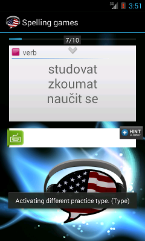

Doplňte písmena v anglickém slovíčku.
Type (Spell Random) je o něco těžší než Šibenice. Cvičení Vás nechá hádat písmena, stejně jako Šibenice, ale nebudete vědět, kolik písmen slovo má, protože nebudou zobrazené pomlčky.
Pokud si nemůžete vzpomenout na překlad slovíčka, použijte výslovnost. V případě potřeby použijte tlačítko Hint, které za Vás uhádne správné písmeno.
Posunutím kartičky doprava se přesunete na další kartičku (pouze po plném dokončení původní kartičky).
Pro více informací si přečtěte podrobnější popis cvičení Hangman.
Toto je jedno ze tří cvičení pro spelling. Kliknutím na ikonu vedle textu si můžete během cvičení přepínat mezi různými typy obtížnosti cvičení Hangman (Šibenice), Spell out (Hláskování) a Spell Random.